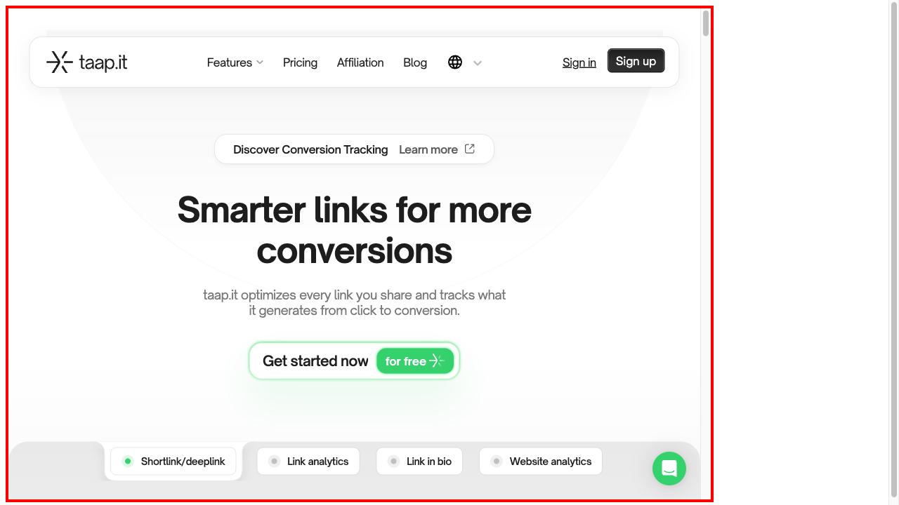

Attack surface
Technologies
Next.js (x-powered-by: Next.js) on Vercel for the app. Firebase Auth, production project shortclic, with a shortclic-dev config also present in the client bundle behind a dev flag. Public API on Heroku at api.taap.it. Docs on Mintlify at docs.taap.it. Tracking host track.taap.it.
Pages
/, /fr, /es, /pricing, /blog, /affiliate, /linkinbio, /deeplink, /onelink, /radar, /conversion, /cgu, /dpa, /privacy-policy, /signin, /signup, /reset-password, /update-password, /dashboard (and settings, links, pages, radar), /admin, /lb/{id}, short codes such as /8la4k1x.
Authentication and roles
Email and password, plus Google and Apple buttons on /signin. App calls send Authorization: Bearer (Firebase ID token). No Set-Cookie was observed on the API responses sampled. Workspace role observed for both test accounts: owner. Admin and /api/user/unsafe-* returned 403 for those users.
Parameters and endpoints exercised
POST /api/auth/forgot-password (email, locale), POST /api/auth/reset-password (oobCode, newPassword), POST /api/signup-with-password, GET/PUT /api/user, GET /api/user/workspaces, GET /api/user/links?workspaceId=, GET /api/user/links/{id}, GET /api/user/pages/{id}, GET /api/workspaces/{id}/integrations, POST /api/admin/impersonate, POST /api/auth/custom-token, GET /api/health, GET /api/user-country, POST https://api.taap.it/v1/auth/login, GET https://api.taap.it/v1/users/.
Findings
CONFIRMED
MEDIUM
F1. Account enumeration on password reset
Endpoint. POST https://taap.it/api/auth/forgot-password
Description. The reset endpoint returns a different status and body for an address that has an account than for an address that does not. Firebase sign-in itself returns INVALID_LOGIN_CREDENTIALS in both cases, so the split is specific to this route. The client treats HTTP 404 as “user not found”; the server answers 500 when the account is missing.
Proof. Controlled inboxes only. Bodies below are the raw responses.
POST /api/auth/forgot-password
Content-Type: application/json
{"email":"stevex+pentest-taap.it@agentmail.to","locale":"en"}
HTTP/2 200
{"success":true,"message":"Reset password email sent successfully"}
Mail from hello@mail.taap.it, subject Reset your taap.it password, link host https://taap.it/update-password?oobCode=REDACTED&locale=en.
POST /api/auth/forgot-password
{"email":"stevex+pentest-taap-absent-9f3a@agentmail.to","locale":"en"}
HTTP/2 500
{"error":"Internal server error"}
After stevex+pentest-taap-b@agentmail.to was registered, the same request returned 200 and the success body. nobody-taap-pentest@example.com and nobody-taap-pentest@example.invalid returned 500.
Impact. A caller can learn which email addresses are registered, including on a domain that accepts both addresses.
Remediation. Return one status and one body whether or not the user exists. Do not raise an unhandled error when the account is absent.
CONFIRMED
MEDIUM
F2. Password reset is not rate limited
Endpoint. POST https://taap.it/api/auth/forgot-password
Description. Repeated reset requests were accepted with no 429 and no Retry-After.
Proof. Four sequential requests for an existing controlled account:
0 HTTP 200 1.030s Retry-After: (absent) {"success":true,"message":"Reset password email sent successfully"}
1 HTTP 200 0.654s Retry-After: (absent) {"success":true,"message":"Reset password email sent successfully"}
2 HTTP 200 0.683s Retry-After: (absent) {"success":true,"message":"Reset password email sent successfully"}
3 HTTP 200 0.644s Retry-After: (absent) {"success":true,"message":"Reset password email sent successfully"}
Six earlier requests for nobody-taap-pentest@example.com, each with a different X-Forwarded-For in 203.0.113.0/24, all returned 500 and none returned 429. Saved as forgot-ratelimit.json.
Impact. The route can send many reset messages to a known mailbox and can speed up F1. A consumed reset code is single-use: replaying it returned 400 {"error":"Invalid or expired reset code"}. X-Forwarded-Host: pentest.invalid left the link on https://taap.it.
Remediation. Limit by account and by client network before sending mail. Return 429 with Retry-After. Do not treat a client-supplied forwarding header as the only client identity.
CONFIRMED
LOW
F3. Public link-in-bio HTML embeds internal ids and analytics
Endpoint. GET https://taap.it/lb/YRg7NDuqU2hbqSLtNQ6F (no cookie, no bearer token). The short code GET /8la4k1x serves the same page.
Description. The Next.js flight payload includes the stored page record, not only the fields a visitor needs to render the page.
Proof. Unauthenticated response excerpt (test account’s own page):
{"page":{"id":"YRg7NDuqU2hbqSLtNQ6F","username":"pentestpagea","widgets":[],
"userId":"rgDb6e2e3xPFpWUuXLSxVTlA4NF2","isArchived":false,
"workspaceId":"1Lop1XFfjqvQ5hzgdOZ4",
"linkId":"BoAp536AkI3ULjydURRz","name":"Pentest Page A",
"averageScrollPercent":100,"averageTimeSpent":27.491500000000002,
"visitCount":2,"totalTimeSpent":54.983000000000004,"totalScrollPercent":200}}
Impact. Anyone with the public URL learns the owner’s Firebase uid, workspace id, link id, and aggregate visit stats. Those ids did not authorize a second account to read the records through the API.
Remediation. Publish a display model (name, widgets, public text). Keep ids used only for authorization and analytics counters on authenticated responses.
CONFIRMED
LOW
F4. Pages render inside a cross-origin frame
Endpoint. GET https://taap.it/ (same header set on /signin, /lb/{id}, and /api/health).
Description. App responses send strict-transport-security: max-age=63072000 and x-powered-by: Next.js. They do not send content-security-policy, x-frame-options, x-content-type-options, or referrer-policy.
Proof. A parent document at about:blank embedded https://taap.it/. The homepage rendered inside the frame. Reading contentWindow.location from the parent threw a cross-origin SecurityError, so the frame is visible but not script-readable.

Screenshot: artifacts/screenshots/frame-home.png. Sign-in inside the same kind of frame painted an in-app client error instead of the form (clickjack-about-blank.png), so a working clickjack of the login form was not shown.
Impact. Another site can overlay the visible UI. The state-changing APIs sampled use a bearer token rather than a cookie.
Remediation. Send Content-Security-Policy: frame-ancestors 'none' (or an explicit allow-list), X-Content-Type-Options: nosniff, and a Referrer-Policy.
CONFIRMED
LOW
F5. Token failures name the Firebase project and admin service account
Endpoints. GET /api/user/unsafe-users, POST /api/admin/impersonate, POST /api/auth/custom-token.
Description. The production bundle contains both the shortclic-dev and shortclic client configs. A token from the dev project is rejected with a detailed 500. A valid production token can be exchanged for a custom token whose issuer is the admin service account. The custom token’s uid was the caller’s own uid. The token value is redacted.
Proof.
GET /api/user/unsafe-users
Authorization: Bearer REDACTED (token audience: shortclic-dev)
HTTP/2 500
{"error":"Firebase ID token has incorrect \"aud\" (audience) claim. Expected \"shortclic\" but got \"shortclic-dev\". Make sure the ID token comes from the same Firebase project as the service account used to authenticate this SDK. See https://firebase.google.com/docs/auth/admin/verify-id-tokens for details on how to retrieve an ID token."}
POST /api/auth/custom-token
Authorization: Bearer REDACTED (production token)
HTTP/2 200
{"customToken":"REDACTED_JWT"}
Decoded payload claims (signature omitted):
iss = firebase-adminsdk-pe2g6@shortclic.iam.gserviceaccount.com
sub = firebase-adminsdk-pe2g6@shortclic.iam.gserviceaccount.com
uid = rgDb6e2e3xPFpWUuXLSxVTlA4NF2
With a normal production user, POST /api/admin/impersonate returned 403 {"error":"Forbidden: Admin access required"}. GET /api/user/unsafe-users returned 403 Forbidden.
Impact. The Firebase project id and the admin SDK service-account email are disclosed. This did not become access to another user.
Remediation. Map verification failures to a generic 401. Avoid copying the service-account email into client-visible error text.
UNVERIFIED
UNVERIFIED
F6. Public API user list and subscription update
Endpoints. GET https://api.taap.it/v1/users/ and PUT https://api.taap.it/v1/users/subscription. The published OpenAPI uses an /api/v1 prefix; those paths returned 404. The live routes are under /v1.
Description. The OpenAPI marks user listing and subscription update as bearer-authenticated. A subscription body includes plan, Stripe ids, and billing dates. That write was not completed.
What was observed.
GET /v1/users/ (no Authorization)
HTTP 403 {"detail":"Not authenticated"}
GET /v1/users/me Authorization: Bearer taapit_invalid
HTTP 401 {"error":{"code":"unauthorized","message":"Invalid API key"}}
GET /v1/users/me Authorization: Bearer REDACTED
(access_token from POST /v1/auth/login)
HTTP 403 {"detail":"Rate limiting is disabled for this workspace"}
The same 403 was returned for /v1/users/, /v1/links, and /v1/rate-limit/debug. The login response itself contained access_token, refresh_token (redacted), expires_in, and the caller’s uid and email.
Evidence missing. Any response from the user-list or subscription handler. A stored plan value would still need a second read of enforced limits or a gated action before it could be called an entitlement bypass. No workspace control was found that turned rate limiting on.
Remediation if this gate is unintentional. Fail closed with a dedicated error, and keep subscription fields writable only by the billing provider.